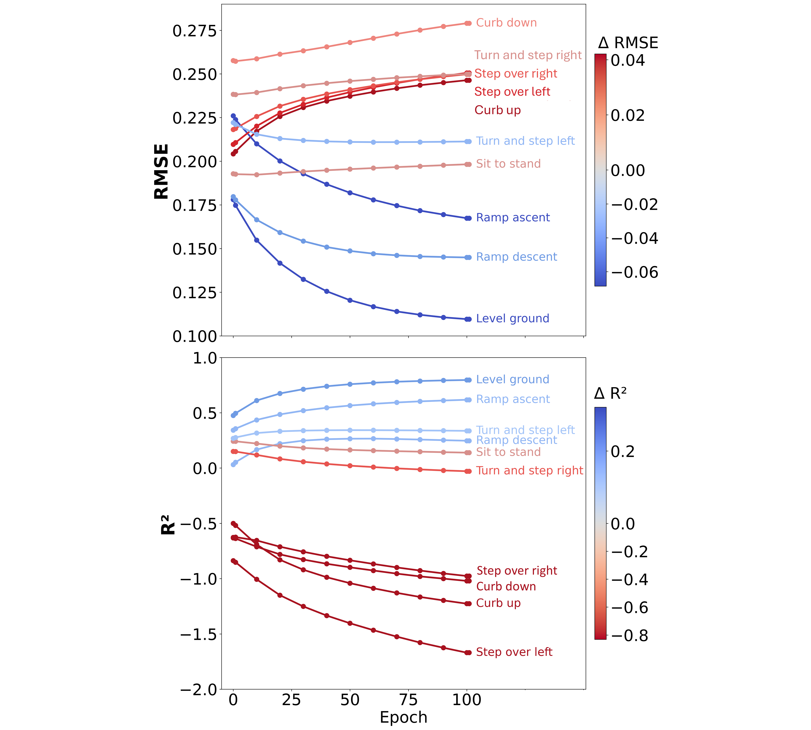

Research
Most of my time at CMU is on a single thread: making hip exoskeleton assistance respond to what the wearer sees and says, under real hardware and timing constraints. Earlier work at UBC used commodity vision to study upper-limb movement after stroke at scale.

Human-in-the-loop adaptation for hip exoskeleton control
Assistive torque should track the person, not a fixed schedule. The open problem is how to turn noisy, qualitative intent and fast-changing scene context into stable controller adjustments when you cannot rely on large per-user datasets or clean labels—and you still need the loop to close on the robot in seconds, not minutes.
- Egocentric vision + speech
- VLMs & edge deployment
- Preference & context learning
- Hardware-integrated pipelines
Problem framing
Hip exoskeleton controllers typically expose a small set of gains or timing parameters that strongly affect comfort and stability. Tuning them by hand does not scale, and fully supervised learning from demonstrations rarely matches how people actually want to feel moment to moment. I treat adaptation as a coupled systems problem: interpret multimodal user state, propose parameter updates that respect actuator and control structure, and evaluate whether the interface remains trustworthy when models are approximate and feedback is ambiguous.
Multimodal interface and edge stack
I build end-to-end pipelines that start from wearable sensing—egocentric video from smart glasses and spoken feedback—rather than from lab-only motion capture. Audio is transcribed with a small-footprint speech model; vision-language models consume the egocentric frame together with the transcript and a concise summary of recent controller settings so updates are grounded in both language and scene. Prompted outputs are constrained to structured assist parameters compatible with our biotorque-style hip controller, and the stack is engineered for deployment on embedded targets (for example NVIDIA Jetson-class devices), including quantization and careful staging between record, inference, and push to the device.
Alongside one-shot VLM updates, I study contextual bandit formulations for learning assist “regimes” from session feedback when the right adjustment is not obvious from a single utterance—so the system can improve across interactions without pretending every label is noise-free.
Personalized torque estimation (locomotion)

A second CMU thread asks how much subject-specific data is really needed to estimate biological joint moments during gait after stroke. I align heterogeneous IMU datasets using musculoskeletal simulation (OpenSim with scripted MATLAB tooling), generate consistent simulated sensor streams from motion-capture-based models, and train temporal convolutional networks in PyTorch for predictive joint torque. Transfer and light finetuning from able-bodied-scale data to post-stroke subjects show large gains with only a sliver of per-person supervision—on the order of a fraction of a percent of subject-specific training data in our setting—highlighting a path to scalable personalization when clinical cohorts are small.
{kind=link}
Earlier research — UBC
Before CMU I spent several years with the Neuroplasticity, Imagery and Motor Behaviour Lab validating whether off-the-shelf pose estimation could support clinical kinematics at throughput impossible for traditional motion capture alone.

Post-stroke reaching kinematics (MediaPipe)
OpenCV + MediaPipe pipelines on a gamified reaching task: hundreds of thousands of actions and frames linked to compensation-related kinematic markers. Outcome work appears in Journal of Neuroengineering and Rehabilitation (2025). DOI

Fine 2D upper-limb motion vs. motion capture
Compared low-cost hand tracking to a laboratory gold standard on tens of thousands of short, dexterous trajectories, quantifying agreement for scalable monitoring. JMIR Formative Research (2024). DOI
Publication list with thumbnails also lives on the home page.